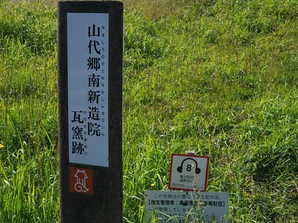
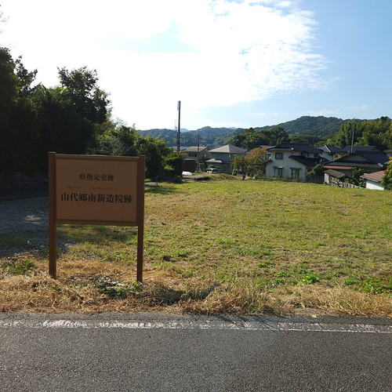
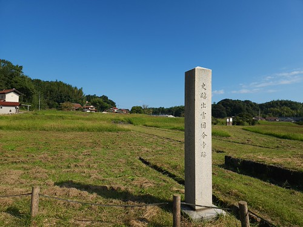
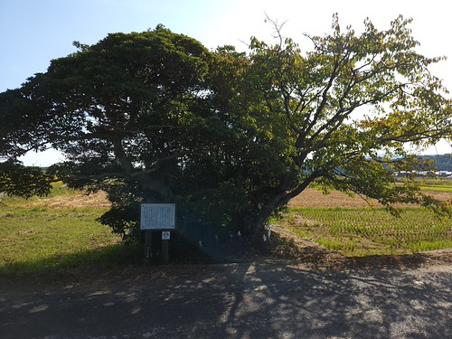
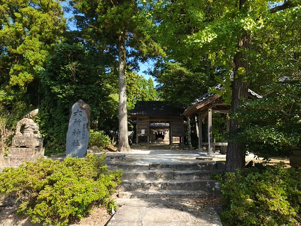
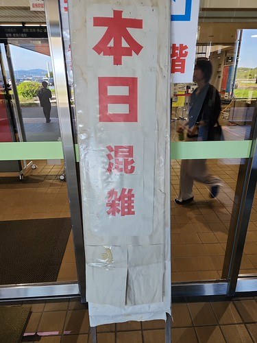
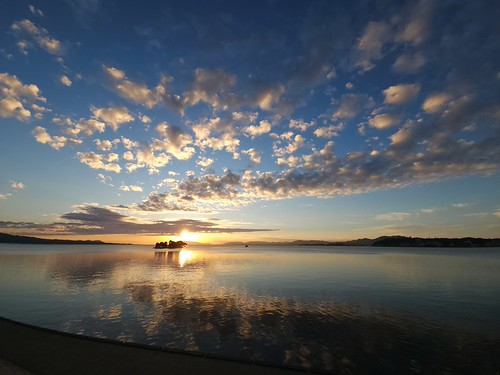
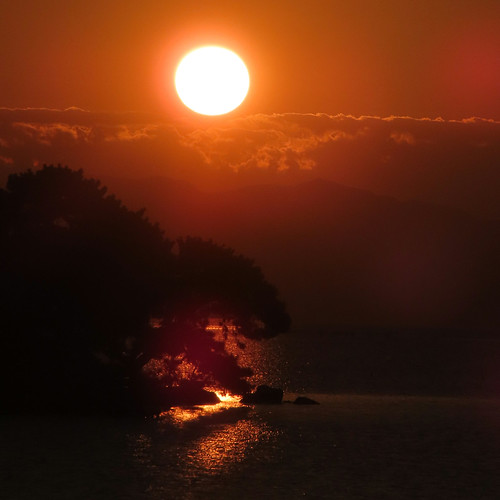
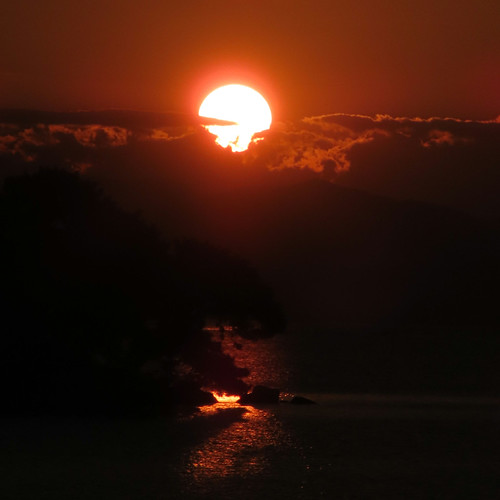
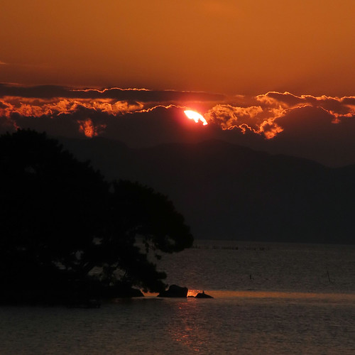

免許更新した（お散歩カメラ 2026-10-11）

どうも。 1965年生まれ，蠍座の男 SPiegel です。 今年は5年ぶりの自動車運転免許更新年ということで，いそいそとお出かけしてみた。
意宇平野を行く
後述するが，更新手続きは午後からなので，午前中はサイクリング。 最初は揖夜神社へ行こうと思ったのだが，どうにも脚が重い。 連日（最近の私にしては）長めの距離を走ってたので，疲れたのかもしれない。 なので，もう少し近場で済ますことにした。
まずは，先日行った「東方の瓦」展でも出てきた南新造院跡へ行ってみる。


新造院跡といっても調査発掘も終わり，野っ原があるだけである。
ちなみに山代郷南新造院とその瓦窯跡は昨年2025年に（山代郷遺跡群，正倉跡，北新造院に続いて）国史跡に追加指定 された。 島根県による解説は以下の通り：
山代郷の新造院は意宇平野の北にそびえる茶臼山を挟んで、南北にあります。南側に位置する四王寺（しわじ）跡は、意宇郡家からの里程からみて、「出雲臣弟山」が造った新造院と考えられます。山代郷の新造院は２つありますので、便宜上、四王寺（しわじ）跡を「南新造院」と呼んでいます。
保存のため一部発掘調査がおこなわれましたが、中心部は民家のため未調査です。発掘の結果、東西２３ｍ、南北１６ｍの基壇が発見されています。出土品は瓦のほか、仏像の髪の毛にあたる部分（螺髮−らほつ）が出土しました。
山代郷南新造院の創立者「出雲臣弟山（いずものおみおとやま）」は、出雲国風土記には「飯石郡少領（しょうりょう）」という肩書で登場します。「少領」とは郡の２番目の地位にあたる、地方の有力豪族です。「弟山」は風土記が作られた１３年後（西暦７４６年）には「出雲国造」に任命され、出雲地方の豪族のトップに立ちました。

ここは子供の頃の遊び場だったのだが，当時は土がむき出しだったような。 草が刈ってあるだけマシかな。

意宇の杜は出雲風土記の国引き神話に関係がある場所で，国引きを終えた
ちなみに国引き神話は記紀にはない。
記述をそのまま読むと朝鮮半島か隠岐の島（か北陸？）あたりから土地を引っ張ってきたことになるが，実は島根半島には
この後は六所神社を経由して市街に戻り，昼飯を貪り食った。

免許更新
昼食後，松江免許センターに自転車で移動。 自転車で来たのは私だけだったようだ（笑）
島根県内の免許センターで更新手続きをする際には予約が必要になったそうで（2025年から），あらかじめ予約しておく。 土曜日と祝日はお休みなので注意。 日曜はやってるが，混雑するらしいので早めの予約がよろしいかと。

更新作業自体はスムーズに終わった。 視力検査も無事にパス。 前回の更新ではメガネを新調したが今年は視力チェックもしていなかったので，ちょっと不安だったのだ。
私はクルマに乗らないゴールド免許保持者なので講習は30分の最短時間。 今は自転車に乗ってるので，つい自転車乗りの視点で聞いてしまう。
たとえば，近年自転車の交通ルール違反について厳罰化が進んでいるが，基本的に自動車運転免許には影響しない。 ただし，重大違反（刑事処分対象）の場合は，自動車運転免許も免停・免取の対象になるらしい。
あと，今年から「酒酔い運転」の定義が変わったそうな。 以前は「アルコールの影響により正常な運転ができないおそれがある状態」が「酒酔い運転」と定義されていたが，体内のアルコール量に関しては定義がなかった。 今は
- 呼気1リットル中のアルコール濃度が0.5ミリグラム以上
- その他アルコールの影響により正常な運転ができないおそれがある状態
の OR 条件で「酒酔い運転」とみなされることになったそうな。
「酒気帯び運転」については今まで通りで，運転手の挙動に関わらず
- 呼気1リットル中のアルコール濃度が0.15ミリグラム以上（0.5ミリグラム未満）
で酒気帯び運転とみなされる。
まぁ，飲んだら（自転車にも）乗るなっちうことやね。 飲酒運転は重大違反で刑事処分の対象だよ。
そういえば，今は自動車でも自転車でも「スマホながら運転」は罰則化されたが，自動車のながら運転が罰則化された直後（2020年）はながら運転による事故は大幅に減ったものの，その後はリバウンドして厳罰化前よりも事故件数が多くなっているようだ。
いや，高校生とか両手放しでスマホ弄りながら自転車を走らせてて「器用やな」とは思うが，やめておけ！ (などとわざわざ言ったりしない)
更新が終わって免許センターを出ると，秋空が広がっていた。
夕日の写真は撮れそうもないし，帰るか。
【おまけ】最近の宍道湖
ここのところ天気がいいので宍道湖の夕日にチャレンジしてるが，何故か夕方の西空に雲がかかって上手く撮れないんだよな。 というわけで，最近の宍道湖の夕景をお届けしよう。
これは Mastodon で何故か反応がよかったやつ。 まぁ，綺麗だもんね。 肉眼ではこんなふうに見えない。 スマホのカメラ機能はこういう遊びができるのが面白いよね。

この翌日は，どうにか夕日が撮れた。 なお，最後の1枚を除いて望遠専用のコンデジで撮っている。



いかがだっただろうか。 またチャンスがあれば挑戦しよう。 風景写真は気長に待つものである（笑）
参考

- Canon コンパクトデジタルカメラ PowerShot ZOOM 写真と動画が撮れる望遠鏡 PSZOOM
- キヤノン (Release 2020-12-10)
- エレクトロニクス
- B08L4WKDZ7 (ASIN), 4549292179675 (EAN)
- 評価
[Comment] 望遠鏡型コンパクトデジカメ。メモリと充電器（要 Power Delivery）は別に用意する必要がある。使い勝手はまぁまぁ。